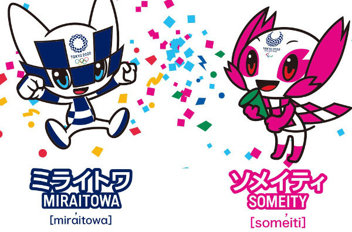
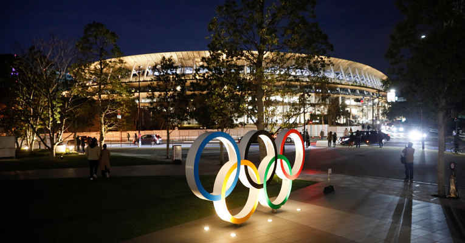

Confira agora algumas curiosidades dos Jogos Olímpicos de Tokyo 2020

Para os Jogos Olímpicos a mascote foi batizada de Miraitowa, enquanto para os Jogos Paralímpicos o nome escolhido foi Someity.

A escolha de Tóquio como cidade-sede das Olimpíadas foi feita em 7 de setembro de 2013, durante a 125ª Sessão do Comitê Olímpico Internacional, em Buenos Aires. A votação final elegeu a capital do Japão como anfitriã dos Jogos Olímpicos com 62% dos votos.
O Estádio Nacional de Tóquio ou Estádio Olímpico passou por uma grande reforma para receber a abertura e o encerramento dos Jogos Olímpicos. O novo estádio terá capacidade para 68 mil pessoas, ao custo de cerca de 1,5 bilhão de dólares.
As 5 mil medalhas de ouro, prata e bronze que serão entregues aos atletas vencedores das Olimpíadas de Tóquio são feitas de lixo eletrônico. A iniciativa começou em 2017, quando o comitê de organização lançou um projeto para tornar o evento mais sustentável e, desde então, 47 mil toneladas de dispositivos eletrônicos foram coletados.
Cerca de 30% do material usado na confecção da peça é advindo de alumínio reciclado. O formato da tocha japonesa é inspirado em uma flor de cerejeira, um dos símbolos do país. As peças serão produzidas com uma folha única de alumínio, com tecnologia semelhante à que é usada para a construção de trens-bala. Ela será acesa em Olímpia na Grécia.